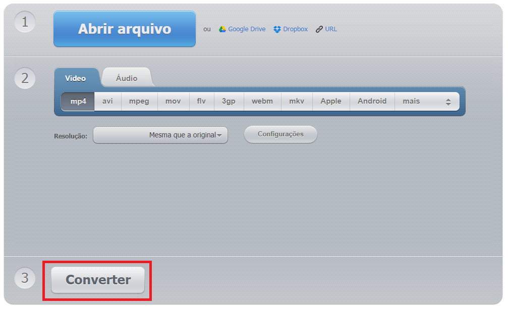

video format
Voltar aos formatos de vídeos
Ir para conversor de vídeos online
Como usar o conversor de vídeos
Pesquisar...
COMO CONVERTER
Para converter diferentes tipos de formatos de vídeos, basta seguir os seguintes passos:
Passo 1
escolha o vídeo que deseja converter.
Passo 2
Selecione o formato de vídeo desejado.
Passo 3
Pressione o botão "converter". 
Pronto! Em instantes seu vídeo estará convertido!